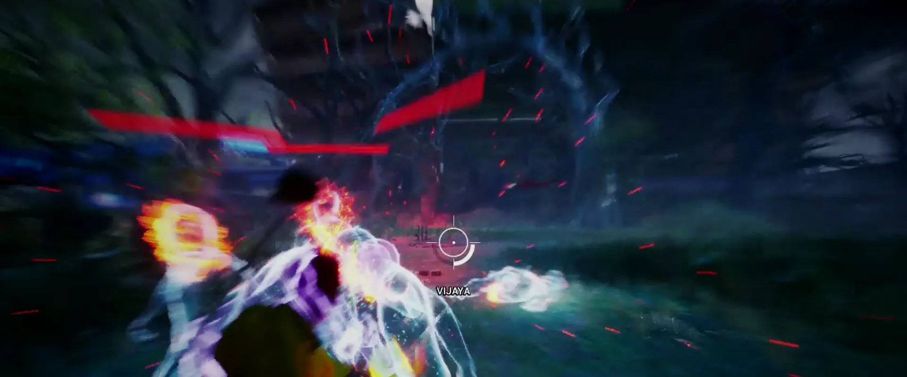
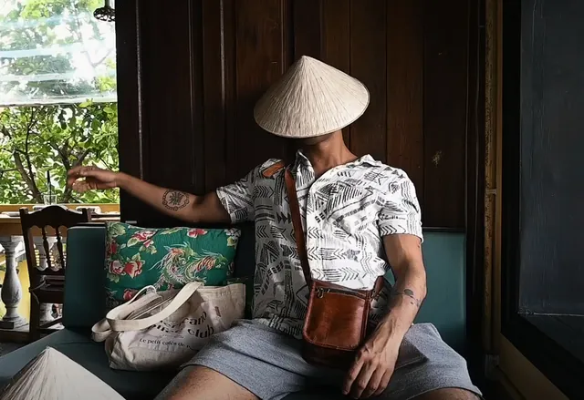

Games
Third-person action games: combat, enemy AI, abilities and locomotion, in Unreal Engine and Unity.



Third-person action games: combat, enemy AI, abilities and locomotion, in Unreal Engine and Unity.
VR, mixed reality and WebGL apps for client teams, built as lead developer since 2023.
Two longer write-ups, with footage and diagrams.
Five years of one Unreal Engine game, from the first movement test to a playable level: combat, enemy AI and Vetal’s powers, all in Blueprints.
Read the deep diveShared packages, a project template and authoring tools that build one Unity project for Quest, phones and the browser.
Read the deep diveTools I built for my own work, released on GitHub.

A voice layer and speaking orb I built on two open-source apps. Replies start playing in 55–90 ms.
Hold Alt over Unity’s Project window to open a paged bar of favorite assets, folders and scene objects.

I studied game design, learned programming along the way, and found my place in VR.
I work remotely as a Senior VR Developer and consultant for a European agency, building interactive experiences, mostly for healthcare, education and training.
I’ve always cared more about what I can make with technology than about any one technology. Most of what I know came from wanting to build something, not yet knowing how, and figuring it out.
Over the years I’ve worked on games, simulations, development tools and AI integrations.
I enjoy designing systems, trying out ideas and finding simpler ways to do complicated things. I work best with people who are just as invested in figuring something out, especially when the end result is still taking shape.
Outside work, I explore AI, study mathematics and C++, read about science and physics, play games and join the occasional game jam.
I like following an idea all the way down and turning simple ideas into ambitious personal projects. That’s how I’ve learned most of what I know.
Fixed price, agreed before I start. Send the problem and you get a quote within 24 hours.
I’m also open to full-time and contract roles.
Combat, enemy AI, abilities and locomotion for third-person games, in Unreal Engine or Unity.
Hand tracking, mixed reality, grab and teleport, from a design document to a build on the headset.
Frame drops on Quest, out-of-memory crashes in iPhone Safari, builds that are too large to download.
PCVR to Quest, Meta SDK to OpenXR, one Unity app to iOS, Android and WebGL.
Characters that listen and talk back, with speech recognition, text-to-speech and a language model.